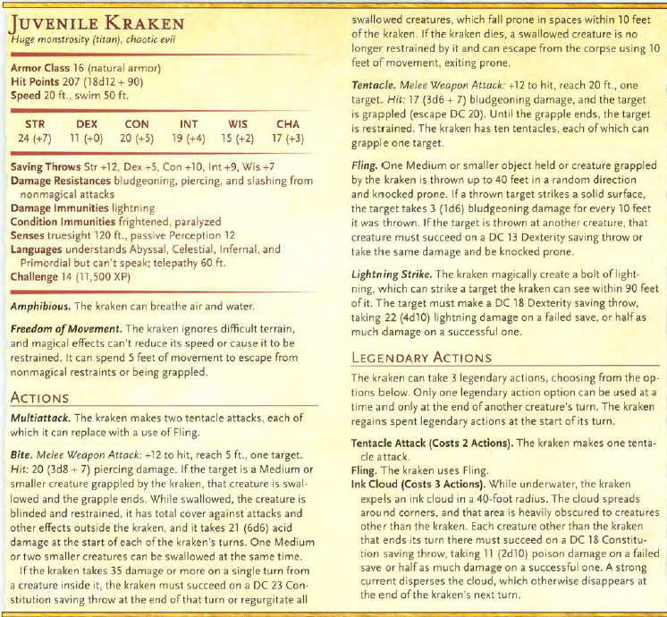
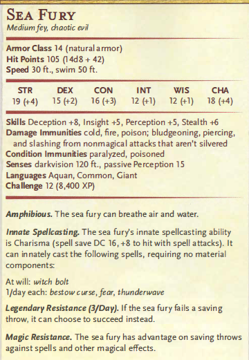
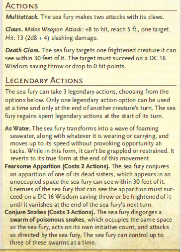
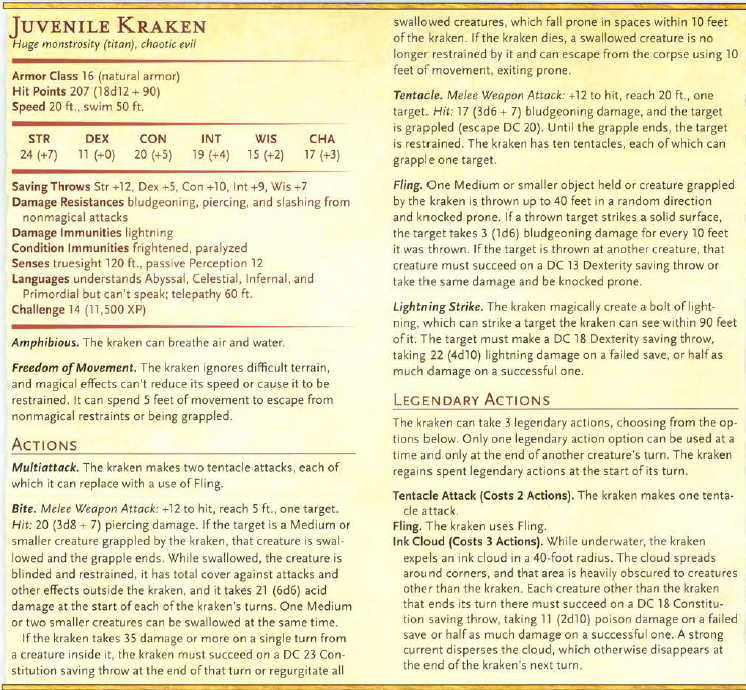
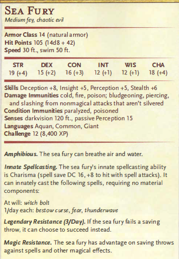
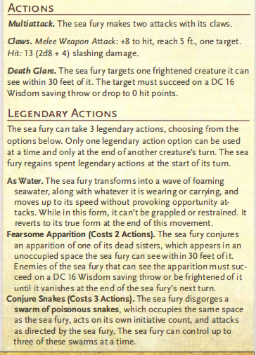

DM info Campagna
Se siete arrivati qui in qualche modo chiudete la pagina grazie xD
Il sole è alto nel cielo, le nuvole, rade e leggere. Una perfetta giornata per viaggiare, il mare, calmo come vetro fuso, riflette la luce con scintillii
danzanti, e ogni onda sembra accarezzare le fiancate delle tre imbarcazioni in viaggio, ancora lontane una dall'altra, ciascuna proveniente da essenzialmente
un mondo diverso.
Il vento soffia costante, portando alle narici l'odore del sale delle onde spezzate dai relativi scafi. Per ora, il giorno è meraviglioso.
Cele, Luca e Bea. La nave su cui state viaggiando, l'eredità di Rhaan, è un galeone di legno scuro con vele blu notte con il simbolo di un drago argentato su di esse.
A poppa c'è una zona dedicata a riti religiosi degli Ascesi, un piccolo altare in pietra con candele sempre accese e protette dal vento.
Si tratta di una nave pesante, tozza, pensata per viaggiare in comodità e sicurezza più che per viaggiare velocemente.
La ciurma si muove abbastanza in sintonia, non è il prima viaggio che fanno assieme questo è sicuro. Il capitano, sir Caldus Veylor, un umano in là con gli anni, una barba
nera curata, elmo sotto il braccio gira per la nave controllando che sia tutto in ordine, il suo sguardo si ferma in maniera giudicante su : DESCRIZIONE PG CELE.
In lontananza vedete altre 2 navi avvicinarsi.
La più vicina delle due, leggermente a nord est, è una trireme modificata per lunghi viaggi in acque non troppo profonde, è dotata di remi e vele quadrate bianche sulle quale è
ricamato un esagono con rune arcane negli angoli.
Il legno è di cedro nero di Marport, segno imprescindibile del fatto che la nave sia un prodotto del cuore dell'industria navale dell'imper Kallia, appunto Marport.
La nave rappresenta l'impero: precisa, imponente, e pronta a essere un’estensione galleggiante del dominio imperiale.
Sulla prua della Virtus Invicta sono intagliate delle parole: "Ordine. Potere. Destino." mentre sui fianchi della nave intaglaite in basso rilievo ci sono numerose rune arcane che
sembrerebbero alimentare magie difensive sulla nave.
A bordo della Virtus Invicta, tutto è scandito dai rituali dell’Impero: il sole sorge con un inno a Kallia, i pasti sono calcolati in grammi. Non è una nave affettuosa, ma un’arma,
affilata e pronta a colpire. Arma sotto il comando di Drakus Pelorin, dal modo in cui si atteggia è ovvio che sia o fosse un militare di alto rango. Passa su e giù per il ponte della nave
controllando con occhio cinico gli schiavi che remano ininterrottamente nonostante la rune magiche gonfino le vele di vento.
A prua Cassian, il magus di bordo è tutto preso da una conversazione con: DESCRIZIONE PG NENO
... dialogo ...
Dopo un'pò una donna umana si avvicina, è Tyrana, una sacerdotessa di Kallia la cui presenza a bordo è un'pò peculiare visto che c'è già un Magus.
Tyrana: "Cassian, Drakus vederti, subito."
Cassian: "Oh... molto bene, andrò dal comandante immediatamente allora" Saluta con un leggero cenno del capo e si avvia.
Tyrana rimane ancora un attimo e ti rivolge questo sorriso pungente. "Spero che il nostro ospite stia gradendo il viaggio..."
La seconda nave invece proviene da sud est, la Figlia del Vento, è una nave mercantile leggera ma robusta, con vele ambrate e legno quasi nero. Il suo design richiama le vecchie imbarcazioni
fluviali dell'impero Zahyg, ma è stata rinforzata per solcare gli oceani. Non è una nave da guerra, ma trasuda eleganza e resistenza.
A bordo il capitano Hariim, uno gnomo di carnagione scura, con un forte accento di R'Kassia è un'pò indispettito, è ormai da mezz'ora che sta discutendo con: DESCRIZIONE PG ALESSIA.
Hariim: "Signorina come le ho già ripetuto non possiamo passare per l'arcipelago, forse una volta arrivati a Liross posso trovarle un... ehm ... passaggio.... per il giusto prezzo sia chiaro".
NPC
Sir Caldus Veylor
Un cavaliere disonorato in cerca di redenzione, guida la nave con un pugno fermo e lo sguardo sempre rivolto all’orizzonte. Un tempo appartenente all'Ordine degli Scudi grigi, ha scelto il mare come via per recuperare l’onore perduto. Barba curata, elmo sempre sotto il braccio.
Drakus Pelorin
Veterano della Legione Celeste, designato a comandare la spedizione per conto dell’Impero. Indossa l’armatura cerimoniale anche in mare, e ogni suo ordine è impartito con tono solenne,
come se fosse legge. È un uomo devoto a Kallia e convinto della superiorità imperiale. Parla poco ma incute rispetto con uno sguardo.
La Legione Celeste è un distaccamento militare molto famoso nell'impero per i risultati raggiunti e la loro brutale efficienza.
Cassian
Un arcanista accademico dell’Università di Shosa, responsabile dell’osservazione astrale e della difesa magica. Sempre impegnato a scrivere, leggere o discutere su questioni teoriche, ha una scarsa tolleranza per i marinai che non comprendono l'importanza della magia.
Tyrana Helis
una chierica di Kallia dalla voce calma ma tagliente. Celebra riti quotidiani sul ponte per purificare la nave e mantenere la benedizione dell’Impero. Porta un bastone intarsiato con lacrime di vetro incantate.
Hariim
Gnomo di mezza età dalla voce morbida, ex-pirata.
Discendente di una linea commerciale sopravvissuta al collasso dell’Impero Zayhg, è abile nel trattare tanto con nobili quanto con contrabbandieri.
Naala
Elfa con il volto costantemente coperto da un velo ornato, parla con voce calma ma autorevole.
Afferma di comunicare con gli spiriti del vento e dell’acqua. Sembra in grado di prevedere l'arrivo delle tempeste. Navigatrice e veggente.
Sheets
 




